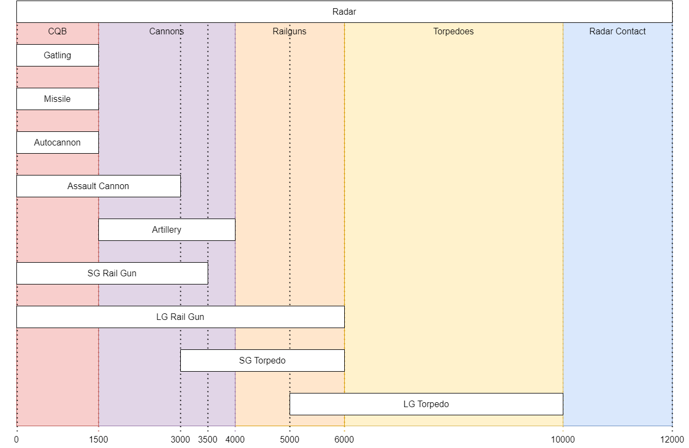
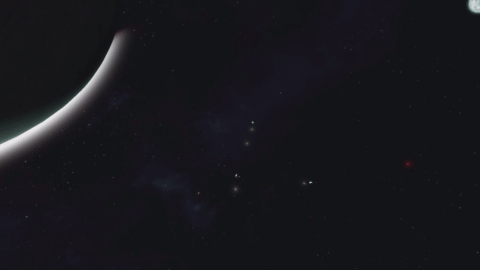

Luyten is a 3 Planet Star-system:


A lot of things have been changed to make the game feel more
goal oriented and have you travel around the system
The idea behind Luyten was to promote traveling around the system, make grouping with other people worthwhile and remove the "do this once and be done" feeling of the vanilla experience:
No Uranium ore is present in asteroids, players can buy it from one NPC Provider (Type One Energy) or mine it at the Dangerous Uranium Hotspot (Lutecia Hotspot - KMDI controlled)
Reactor and Gravity components are now end game and locked up behind a NPC Provider (Tech Noir)
-> Playing with gravity and high power density generation is now more "active" with money-to-component grind and money-to-uranium grind
-> This will make end game ships and bases use the Economy System

The world is divided in 3 zones:

Eos Station is at the center of system
It's the main Trading Hub where you can buy everything except Gravity & Reactor components
And the only host of Type One Energy (Uranium supplier) and Nariman Dynamics (Ammo, Guidance System and Zonechips supplier)
Tech Noir's Anchar Station is the place to buy all your components
Their mastery in high tech R&D make them the only place to buy Reactor & Gravity components and other end game components like Accumulators and Nanite Containers
They are in high demand of ingots to power their labs

Zorya Station was build by G.C. Metals & Cryogenics in conjunction with Emerling-Voss Minerals
This is the home of everything Ore & Ingot related You can also sell grids here for space cash and buy basic ships there
A small cluster of rather large pure Uranite asteroids and defended by the KMDI Faction

Don't get spotted or come with support


| Energy Provider: Type One Energy (Dan Wu) |
|---|
-> Uranium Ingots
-> H2 & O2 Gas
Presence: Eos Station - Central Hub
| Tech Provider: Tech Noir (Mike Grey) |
|---|
-> Reactor components
-> Gravity components
-> Accumulators
-> Nanite containers
-> All other components except Guidance Systems
-> H2 & O2 Gas
Presence: Anchar Station - Research Station
| Component Provider: Nariman Dynamics (Warwick Wishmonger) |
|---|
-> Every components except Reactor, Gravity, Accumulator & Nanite Containers
-> ZoneChips
-> Missiles
Presence: Eos Station - Central Hub
| Refined goods Provider: G.C. Metals & Cryogenics (David Zeus) |
|---|
-> Every ingots except Uranium
-> H2 & O2 Gas (Zorya)
Presence: Eos Station - Central Hub, Zorya Station - Outer Hub
| Ore Provider: Emerling-Voss Minerals (Wenna Hemingway) |
|---|
-> Every ores Except Uranium
Presence: Eos Station - Central Hub, Zorya Station - Outer Hub
| Physical Freight: Transport Union (Susan Morningstar) |
|---|
-> Physical freight
-> Beginner Ships (Zorya)
Presence: Eos Station, Zorya Station, Anchar Station
The economy system is now in a central place to give short and long term goals
Progression is made by either mining, trading, hauling cargo, hunting or scavenging until endgame (Uranium, Reactors, Gravity Drives)
Players will have to make space cash or pirate NPCs to advance to end game
Players will have access to basic space faring capabilities (Buffed hydro and low/mid energy sources)
Added physical cargo hauling so your Hauler builds are now useful! Those physical cargo are purchasable at any Trade Station and will automatically grant you a nice reward when you navigate to another Trade Station
Added a Grid to Space cash mechanic for you hunters! If you hate grinding the grid you hunted, you can now take them to a specific station and sell them for sweet cash :)

Decreased Ore collection ratios:
It was way too easy to produce big projects after a single mining campaign
Regular Asteroids (no ice, no uranium) only spawn in a 100km radius of all Hot Spots (Borrelli, Lutecia, Hyakutake)
Stone is now only processed in the Survival Kit, lets go back to the old SE!
Silicon is now required for:
Nickel is now required for:
Silver ingots are now included in the production of:
This is to make Silicon, Silver and Nickel mining more relevant instead of the current mine one node and be done
Gravel production is now reduced by a factor of 10 and has no usefulness for the moment
Some energy generation blocks have been buffed or nerfed to accommodate the new progression and end game
Power Output x1.5 from 0.16 to 0.240MW and 0.04 to 0.06MW
Max power output doubled from 5 to 10MW and 0.5 to 1MW
Fuel efficiency doubled from 0.01 to 0.02
Reactors will consume twice more uranium than in vanilla. It will compensate the lack of JumpDrive charge when moving around the system and act as a money sink
Recipe: Changed Gravity Generator requirement to 100 Superconductors Added a small grid version
Recipe: Changed Gravity Generator requirement to 300 Superconductors
Buffed ZoneChips duration x3 (from 60 to 180min)
Ship tools received some QoL buffs
Small welder range increased from 1.3 to 2.5m
Large welder range increased from 2.26 to 5.5m
Small Drill range offset increased from 0.6 to 0.8m
Large Drill range increased from 1.9 to 2.35m, offset from 2.8 to 4.2m
Small Ore Detector range increased from 50 to 75m
Large Ore Detector range increased from 150 to 300m
Doubled opening and closing speed (from 2 to 4) to make it inline with normal sliding door
A jetpack, a grinder and a handful of bottles was all what was needed to beat the game, not anymore. The following nerf are now applied:
You WILL have to open your visor in a pressurized environment to not deplete your O2 and die
You will have power for longer in cold or hot environments
You wont be able to stay in the air on planet as long as before and falling from high place is now risky, better have an utility ship or a ship printer early/mid game
Knighmare Defense Industries (very difficult encounters)

Valkyrja Mad Eagles (difficult encounters)
Transport Union
Reavers
Imber
Incon
Parallax
The world comes with a specially made Dynamic Max Speed,
Thrust Signature and with a custom WeaponCore Vanilla replacer with new particles

All player grids must have at least one beacon
That beacon will emit your signature when you have active
thrusters/gravity drive or have active power producers
Average ships will be visible up to 30km during thrust, be careful how you navigate
or get spotted!
Large thrusters have now a flame particle
that will be visible up to 20km

There is now 3 max speeds:
Fast Space Zone: 25000m/s
Slow Space Zones (around POIs): 500m/s
Planets: 150m/s
Your speed will increase linearly going from the planet's surface to space (40km)
The Thrust to Weight Ratio will influence your cruise speed and max boost speed: be careful when building :D
Having a JumpDrive on board will give you better boost speed
Large hydrogen thrusters have a x4 thrust increase
Small hydrogen thrusters have a x1.5 thrust increase
Hydrogen efficiency buffed, as it'll be used
for power and travel in this rebalance:
x1.3 for large thrusters
x1.1 for small thrusters
JumpDrive no longer provide jumping capabilities They now offer 2 benefits:
The transit system allows you to go up to 10km/s Your grid must be at 1000m/s to enable transit speed This will cost power and H2 You can use the transit system if:
Small hydrogen thrusters can now act as RCS maneuvering thrusters All rotational input will be enhanced at the cost of 1.25 the max fuel consumption Your grid will be much more nimble with them off
To activate the RCS, go to the desired thruster in the terminal and
Your grid will be able to reach a high max speed under thrust Cruising speed will remain the same
Laser Antennas do not need line of sight anymore
The power requirement have been halved to accommodate
trade-locked high power generation
Luyten use Weaponcore to have a better and smoother combat experience: Combat has now 4 engagement ranges:  
10km to 5km Torpedo Range

-> Static rocket launchers now fire homing torpedoes
they have high damage but can be shot down by PDCs
-> They have a max speed of 400:150m/s (large:small)
-> Launchers will overheat after shooting 4 torpedoes
-> Reload speed of 40s after 8 torpedo shots
This make PDC mandatory on all ships, good acceleration/maneuverability helps too
6km Railgun range

-> Large Railgun charge is now 30s from 1min
-> Large Railgun powerdraw increased from 38MW to 76MW (x2)
-> Large Railgun Sabot will pierce through entire grids
-> Large Railgun Sabot is now red with a shorter trail line
-> Small Railgun charge is now 10s from 15s
-> Small Railgun powerdraw increased from 3.6MW to 7.2MW (x2)
-> Small Railgun Sabot has a 3.5km range and will damage up to 2 large grid heavy blocks
-> Small Railgun Sabot has now a shorter trail line
-> Railgun sabots will take 1sec to reach its target from max range
-> Increased backkick force by 10 to make railgun's shot feel powerful
This make Railguns more relevant during fights and a real end game weapon
Railguns will overheat if used too much on cooldown
4km/3km Cannon range
-> Artillery range is 4km and Vanilla damage
-> Assault Cannons range is 3km and Vanilla damage
-> Assault Cannons shell tracers now have a red hue
This is for better visual contrast from Artillery Shells
1.5km CQB

-> Gatling turrets act now as PDCs, they will shoot down incoming missiles
-> Gatling tracer is now Orange and visible up to 10km
-> Gatling turret and gun have 133% fire rate (from 700rpm to 1060rpm)
and ~66% the damage (from 90 to 60)
-> Gatling turret rotation speed and accuracy increased by x10
-> Gatling ammo is bit more potent against non-armor blocks (+10%)
-> Gatlings have now an overheat mechanic to avoid mindless spray and pray
-> Missiles turret range increased from 800m to 1.5km (Dumb fire rockets)
Dumb rockets have a small tracking ability to compensate for the much higher ship speeds
-> Interior turret is same as Vanilla
This rebalance is done to make ships roles more contrasted: ship speeds, armouring and weapon loadouts are now linked
Paired with the new component progression and power consumption, I hope fleets will be more interesting to design and fight with
Note: this rebalance was done with your existing blueprints in mind. They should keep their relevance in and out of Luyten's settings.
Missiles: + Increased Uranium x10
+ Increased Magnesium x1.25
- Removed Platinum
Artillery Shell: + Increased Uranium x5
Large & Small Railgun Sabots: + Increased Uranium x3
Going into battle was almost free with high-end weapons, now proper logistics and planning is mandatory
Block spamming is a real performance issue in Space Engineers and does not promote sharing grids between players,
To fix those weaknesses the following rules applies:
25 Welders
6 Grinders
6 Drills
2 Build and Repairs
12 Refineries (Basic & Normal)
12 Assemblers (Basic & Normal)
32 O2/H2 Generators
30 Hydrogen Tanks
10 Oxygen Tanks
12 Rocket Launchers
8 Large Railguns
16 Small Railguns
15 of each Turrets
15 CTC
3 Respawn points (Survival Kits & Medical Rooms)
56 Gravity generators
56 Mass blocks
50 Welders
25 Grinders
25 Drills
8 Build and Repairs
24 Refineries (Basic & Normal)
24 Assemblers (Basic & Normal)
88 O2/H2 Generators
24 Rocket Launchers
24 Railguns
30 Programmable Blocks
30 Event controllers
40 Timer Blocks
15 AI Offense / AI Defense
20 AI Move
15 AI Basic / Recorder
60 Hydrogen Tanks
20 Oxygen Tanks
8 Respawn points (Survival Kits & Medical Rooms)
Mods:
Custom VFX & SFX: Rednight
Jerry Cants & Fuel Tanks: Zardo's Fuel Extractor Mod
Planets:
Ships Blueprints:
Trade Hubs: